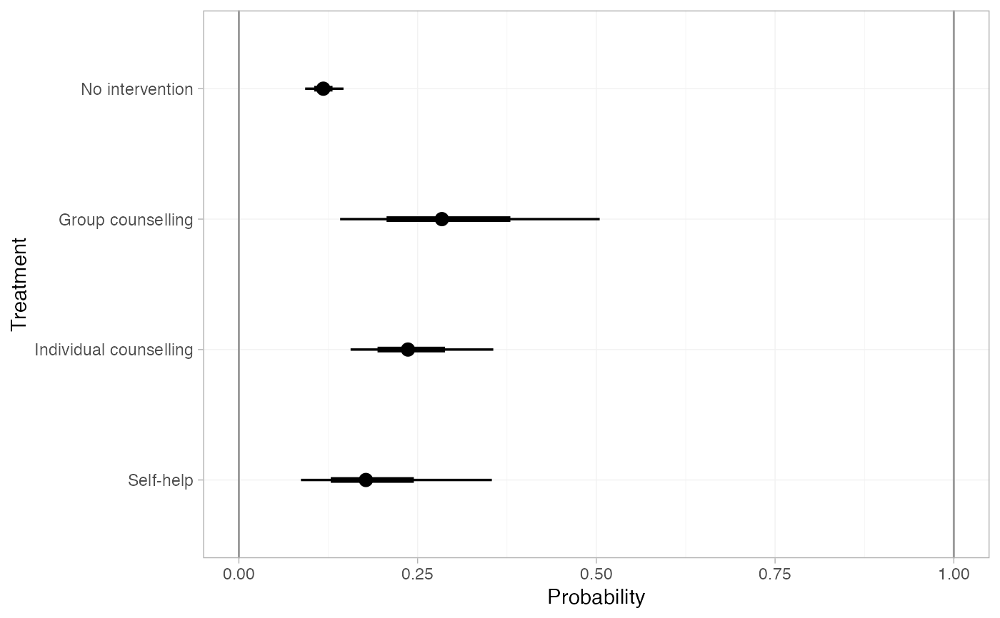
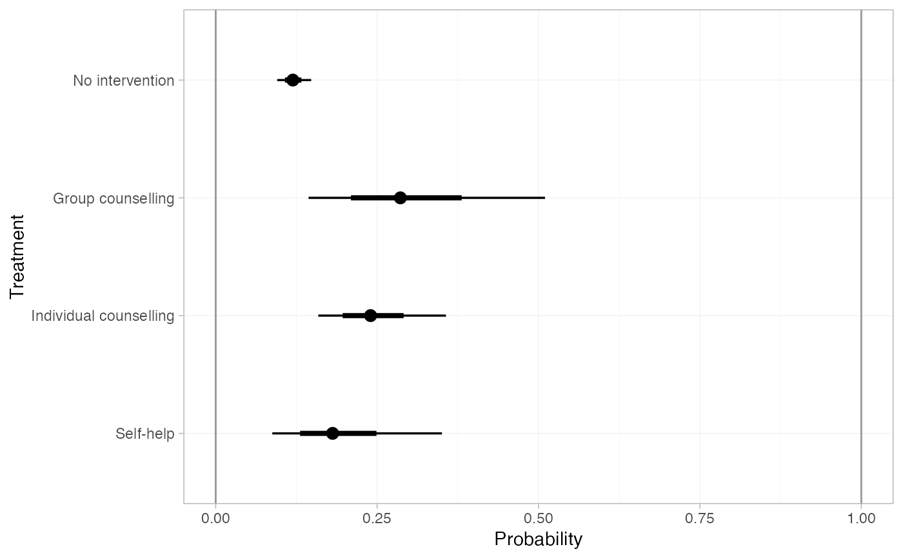
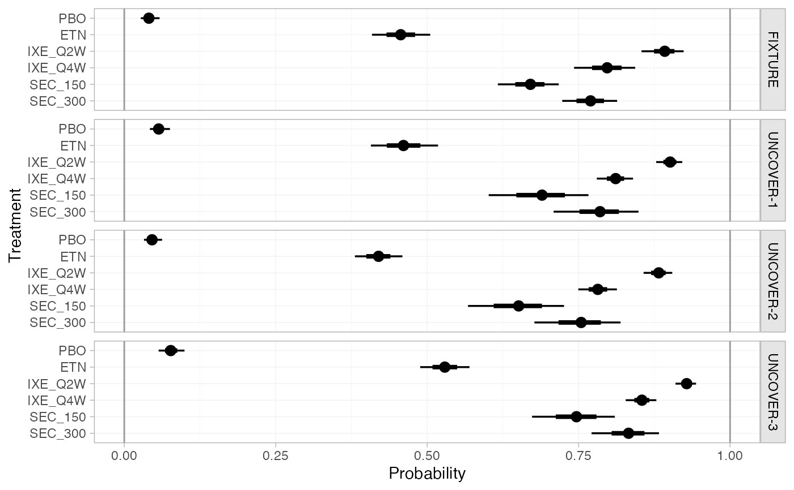
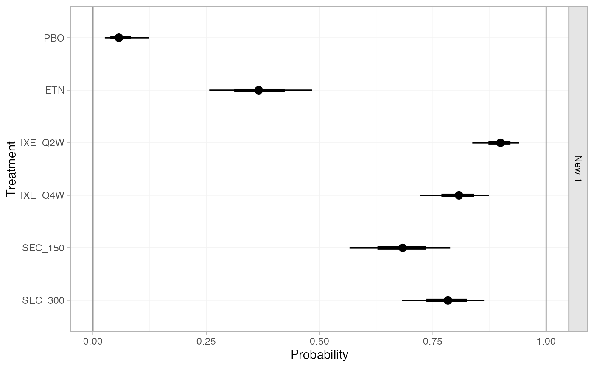
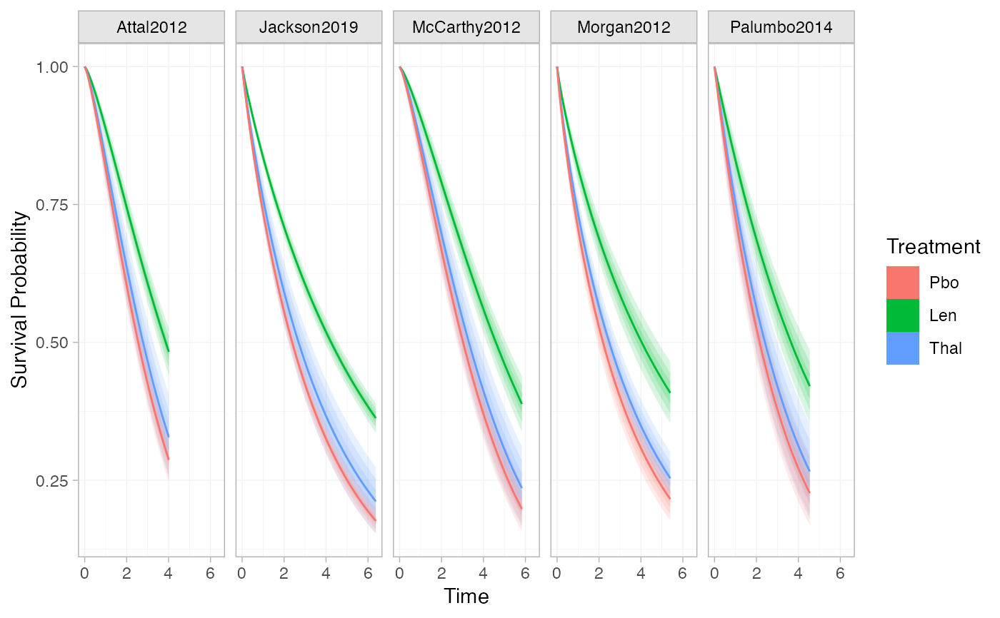
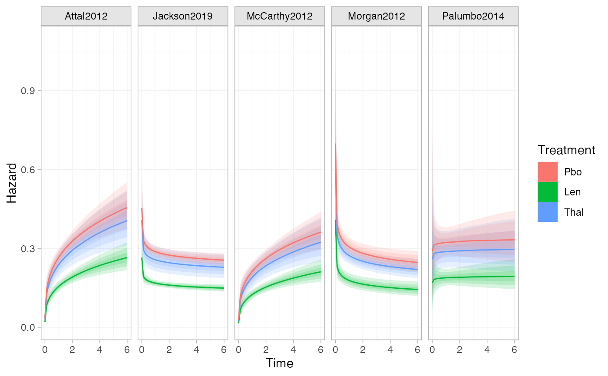
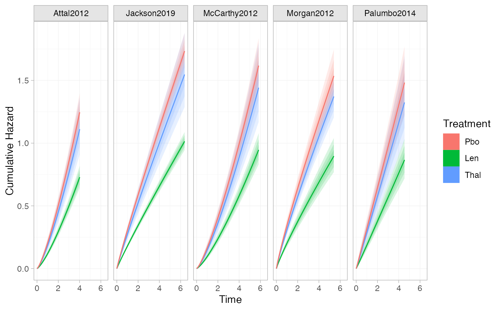
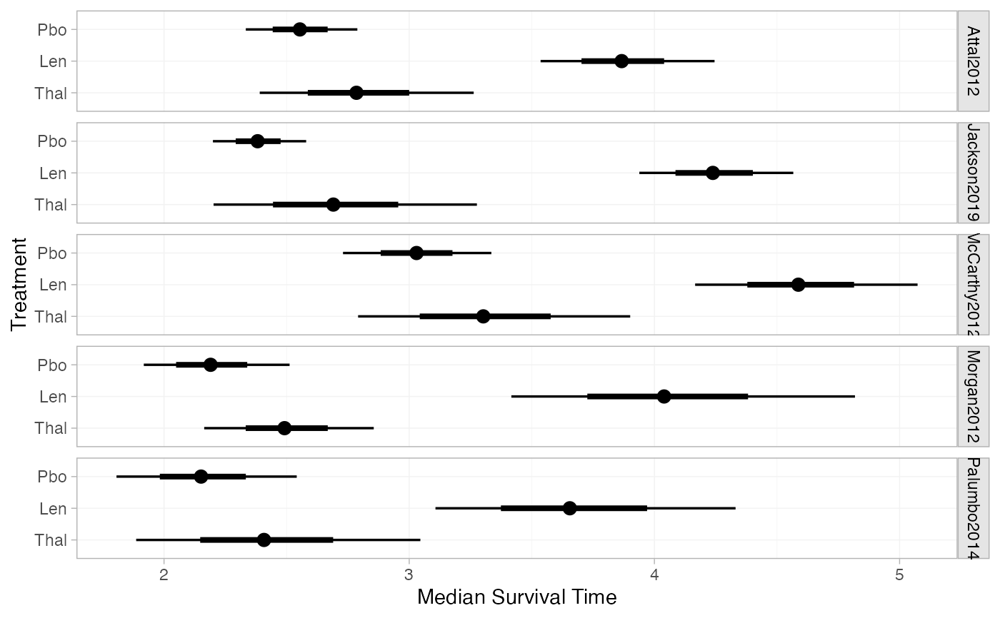

Obtain predictions of absolute effects from NMA models fitted with nma().
For example, if a model is fitted to binary data with a logit link, predicted
outcome probabilities or log odds can be produced. For survival models,
predictions can be made for survival probabilities, (cumulative) hazards,
(restricted) mean survival times, and quantiles including median survival
times.
When an IPD NMA or ML-NMR model has been fitted, predictions can be
produced either at an individual level or at an aggregate level.
Aggregate-level predictions are population-average absolute effects; these
are marginalised or standardised over a population. For example, average
event probabilities from a logistic regression, or marginal (standardised)
survival probabilities from a survival model.
Usage
# S3 method for class 'stan_nma'
predict(
object,
...,
baseline = NULL,
newdata = NULL,
study = NULL,
type = c("link", "response"),
level = c("aggregate", "individual"),
baseline_trt = NULL,
baseline_type = c("link", "response"),
baseline_level = c("individual", "aggregate"),
probs = c(0.025, 0.25, 0.5, 0.75, 0.975),
predictive_distribution = FALSE,
summary = TRUE,
progress = FALSE,
trt_ref = NULL
)
# S3 method for class 'stan_nma_surv'
predict(
object,
times = NULL,
...,
baseline_trt = NULL,
baseline = NULL,
aux = NULL,
newdata = NULL,
study = NULL,
type = c("survival", "hazard", "cumhaz", "mean", "median", "quantile", "rmst", "link"),
quantiles = c(0.25, 0.5, 0.75),
level = c("aggregate", "individual"),
times_seq = NULL,
probs = c(0.025, 0.25, 0.5, 0.75, 0.975),
predictive_distribution = FALSE,
summary = TRUE,
progress = interactive(),
trt_ref = NULL
)Arguments
- object
A
stan_nmaobject created bynma().- ...
Additional arguments, passed to
uniroot()for regression models ifbaseline_level = "aggregate".- baseline
An optional
distr()distribution for the baseline response (i.e. intercept), about which to produce absolute effects. Can also be a character string naming a study in the network to take the estimated baseline response distribution from. IfNULL, predictions are produced using the baseline response for each study in the network with IPD or arm-based AgD.For regression models, this may be a list of
distr()distributions (or study names in the network to use the baseline distributions from) of the same length as the number of studies innewdata, possibly named by the studies innewdataor otherwise in order of appearance innewdata.Use the
baseline_typeandbaseline_levelarguments to specify whether this distribution is on the response or linear predictor scale, and (for ML-NMR or models including IPD) whether this applies to an individual at the reference level of the covariates or over the entirenewdatapopulation, respectively. For example, in a model with a logit link withbaseline_type = "link", this would be a distribution for the baseline log odds of an event. For survival models,baselinealways corresponds to the intercept parameters in the linear predictor (i.e.baseline_typeis always"link", andbaseline_levelis"individual"for IPD NMA or ML-NMR, and"aggregate"for AgD NMA).Use the
baseline_trtargument to specify which treatment this distribution applies to.- newdata
Only required if a regression model is fitted and
baselineis specified. A data frame of covariate details, for which to produce predictions. Column names must match variables in the regression model.If
level = "aggregate"this should either be a data frame with integration points as produced byadd_integration()(one row per study), or a data frame with individual covariate values (one row per individual) which are summarised over.If
level = "individual"this should be a data frame of individual covariate values, one row per individual.If
NULL, predictions are produced for all studies with IPD and/or arm-based AgD in the network, depending on the value oflevel.- study
Column of
newdatawhich specifies study names or IDs. When not specified: ifnewdatacontains integration points produced byadd_integration(), studies will be labelled sequentially by row; otherwise data will be assumed to come from a single study.- type
Whether to produce predictions on the
"link"scale (the default, e.g. log odds) or"response"scale (e.g. probabilities).For survival models, the options are
"survival"for survival probabilities (the default),"hazard"for hazards,"cumhaz"for cumulative hazards,"mean"for mean survival times,"quantile"for quantiles of the survival time distribution,"median"for median survival times (equivalent totype = "quantile"withquantiles = 0.5),"rmst"for restricted mean survival times, or"link"for the linear predictor. Fortype = "survival","hazard"or"cumhaz", predictions are given at the times specified bytimesor at the event/censoring times in the network iftimes = NULL. Fortype = "rmst", the restricted time horizon is specified bytimes, or iftimes = NULLthe earliest last follow-up time amongst the studies in the network is used. Whenlevel = "aggregate", these all correspond to the standardised survival function (see details).- level
The level at which predictions are produced, either
"aggregate"(the default), or"individual". Ifbaselineis not specified, predictions are produced for all IPD studies in the network iflevelis"individual"or"aggregate", and for all arm-based AgD studies in the network iflevelis"aggregate".- baseline_trt
Treatment to which the
baselineresponse distribution refers, ifbaselineis specified. By default, the baseline response distribution will refer to the network reference treatment. Coerced to character string.- baseline_type
When a
baselinedistribution is given, specifies whether this corresponds to the"link"scale (the default, e.g. log odds) or"response"scale (e.g. probabilities). For survival models,baselinealways corresponds to the intercept parameters in the linear predictor (i.e.baseline_typeis always"link").- baseline_level
When a
baselinedistribution is given, specifies whether this corresponds to an individual at the reference level of the covariates ("individual", the default), or from an (unadjusted) average outcome on the reference treatment in thenewdatapopulation ("aggregate"). Ignored for AgD NMA, since the only option is"aggregate"in this instance. For survival models,baselinealways corresponds to the intercept parameters in the linear predictor (i.e.baseline_levelis"individual"for IPD NMA or ML-NMR, and"aggregate"for AgD NMA).- probs
Numeric vector of quantiles of interest to present in computed summary, default
c(0.025, 0.25, 0.5, 0.75, 0.975)- predictive_distribution
Logical, when a random effects model has been fitted, should the predictive distribution for absolute effects in a new study be returned? Default
FALSE.- summary
Logical, calculate posterior summaries? Default
TRUE.- progress
Logical, display progress for potentially long-running calculations? Population-average predictions from ML-NMR models are computationally intensive, especially for survival outcomes. Currently the default is to display progress only when running interactively and producing predictions for a survival ML-NMR model.
- trt_ref
Deprecated, renamed to
baseline_trt.- times
A numeric vector of times to evaluate predictions at. Alternatively, if
newdatais specified,timescan be the name of a column innewdatawhich contains the times. IfNULL(the default) then predictions are made at the event/censoring times from the studies included in the network (or according totimes_seq). Only used iftypeis"survival","hazard","cumhaz"or"rmst".- aux
An optional
distr()distribution for the auxiliary parameter(s) in the baseline hazard (e.g. shapes). Can also be a character string naming a study in the network to take the estimated auxiliary parameter distribution from. IfNULL, predictions are produced using the parameter estimates for each study in the network with IPD or arm-based AgD.For regression models, this may be a list of
distr()distributions (or study names in the network to use the auxiliary parameters from) of the same length as the number of studies innewdata, possibly named by the study names or otherwise in order of appearance innewdata.- quantiles
A numeric vector of quantiles of the survival time distribution to produce estimates for when
type = "quantile".- times_seq
A positive integer, when specified evaluate predictions at this many evenly-spaced event times between 0 and the latest follow-up time in each study, instead of every observed event/censoring time. Only used if
newdata = NULLandtypeis"survival","hazard"or"cumhaz". This can be useful for plotting survival or (cumulative) hazard curves, where prediction at every observed even/censoring time is unnecessary and can be slow. When a call from withinplot()is detected, e.g. likeplot(predict(fit, type = "survival")),times_seqwill default to 50.
Value
A nma_summary object if summary = TRUE, otherwise a list
containing a 3D MCMC array of samples and (for regression models) a data
frame of study information.
Aggregate-level predictions from IPD NMA and ML-NMR models
Population-average absolute effects can be produced from IPD NMA and ML-NMR
models with level = "aggregate". Predictions are averaged over the target
population (i.e. standardised/marginalised), either by (numerical)
integration over the joint covariate distribution (for AgD studies in the
network for ML-NMR, or AgD newdata with integration points created by
add_integration()), or by averaging predictions for a sample of individuals
(for IPD studies in the network for IPD NMA/ML-NMR, or IPD newdata).
For example, with a binary outcome, the population-average event probabilities on treatment \(k\) in study/population \(j\) are $$\bar{p}_{jk} = \int_\mathfrak{X} p_{jk}(\mathbf{x}) f_{jk}(\mathbf{x}) d\mathbf{x}$$ for a joint covariate distribution \(f_{jk}(\mathbf{x})\) with support \(\mathfrak{X}\) or $$\bar{p}_{jk} = \sum_i p_{jk}(\mathbf{x}_i)$$ for a sample of individuals with covariates \(\mathbf{x}_i\).
Population-average absolute predictions follow similarly for other types of outcomes, however for survival outcomes there are specific considerations.
Standardised survival predictions
Different types of population-average survival predictions, often called
standardised survival predictions, follow from the standardised survival
function created by integrating (or equivalently averaging) the
individual-level survival functions at each time \(t\):
$$\bar{S}_{jk}(t) = \int_\mathfrak{X} S_{jk}(t | \mathbf{x}) f_{jk}(\mathbf{x})
d\mathbf{x}$$
which is itself produced using type = "survival".
The standardised hazard function corresponding to this standardised
survival function is a weighted average of the individual-level hazard
functions
$$\bar{h}_{jk}(t) = \frac{\int_\mathfrak{X} S_{jk}(t | \mathbf{x}) h_{jk}(t | \mathbf{x}) f_{jk}(\mathbf{x})
d\mathbf{x} }{\bar{S}_{jk}(t)}$$
weighted by the probability of surviving to time \(t\). This is produced
using type = "hazard".
The corresponding standardised cumulative hazard function is
$$\bar{H}_{jk}(t) = -\log(\bar{S}_{jk}(t))$$
and is produced using type = "cumhaz".
Quantiles and medians of the standardised survival times are found by
solving
$$\bar{S}_{jk}(t) = 1-\alpha$$
for the \(\alpha\%\) quantile, using numerical root finding. These are
produced using type = "quantile" or "median".
(Restricted) means of the standardised survival times are found by
integrating
$$\mathrm{RMST}_{jk}(t^*) = \int_0^{t^*} \bar{S}_{jk}(t) dt$$
up to the restricted time horizon \(t^*\), with \(t^*=\infty\) for mean
standardised survival time. These are produced using type = "rmst" or
"mean".
See also
plot.nma_summary() for plotting the predictions.
Examples
## Smoking cessation
# \donttest{
# Run smoking RE NMA example if not already available
if (!exists("smk_fit_RE")) example("example_smk_re", run.donttest = TRUE)
# }
# \donttest{
# Predicted log odds of success in each study in the network
predict(smk_fit_RE)
#> ---------------------------------------------------------------------- Study: 1 ----
#>
#> mean sd 2.5% 25% 50% 75% 97.5%
#> pred[1: No intervention] -2.79 0.33 -3.50 -3.00 -2.78 -2.56 -2.19
#> pred[1: Group counselling] -1.68 0.51 -2.66 -2.02 -1.68 -1.35 -0.65
#> pred[1: Individual counselling] -1.94 0.39 -2.72 -2.20 -1.94 -1.68 -1.20
#> pred[1: Self-help] -2.31 0.49 -3.30 -2.62 -2.30 -1.97 -1.36
#> Bulk_ESS Tail_ESS Rhat
#> pred[1: No intervention] 5003 3082 1
#> pred[1: Group counselling] 2964 2989 1
#> pred[1: Individual counselling] 2645 2582 1
#> pred[1: Self-help] 2666 2832 1
#>
#> ---------------------------------------------------------------------- Study: 2 ----
#>
#> mean sd 2.5% 25% 50% 75% 97.5%
#> pred[2: No intervention] -2.57 0.76 -4.14 -3.06 -2.57 -2.08 -1.05
#> pred[2: Group counselling] -1.46 0.76 -2.95 -1.95 -1.47 -0.98 0.06
#> pred[2: Individual counselling] -1.72 0.75 -3.23 -2.20 -1.73 -1.24 -0.23
#> pred[2: Self-help] -2.08 0.77 -3.61 -2.59 -2.08 -1.59 -0.56
#> Bulk_ESS Tail_ESS Rhat
#> pred[2: No intervention] 2781 2596 1
#> pred[2: Group counselling] 3518 2580 1
#> pred[2: Individual counselling] 3012 2722 1
#> pred[2: Self-help] 3534 2695 1
#>
#> ---------------------------------------------------------------------- Study: 3 ----
#>
#> mean sd 2.5% 25% 50% 75% 97.5%
#> pred[3: No intervention] -2.14 0.12 -2.39 -2.22 -2.14 -2.06 -1.91
#> pred[3: Group counselling] -1.04 0.45 -1.91 -1.34 -1.04 -0.74 -0.12
#> pred[3: Individual counselling] -1.29 0.26 -1.81 -1.47 -1.29 -1.13 -0.77
#> pred[3: Self-help] -1.66 0.41 -2.47 -1.93 -1.66 -1.39 -0.85
#> Bulk_ESS Tail_ESS Rhat
#> pred[3: No intervention] 7734 2393 1
#> pred[3: Group counselling] 2427 2923 1
#> pred[3: Individual counselling] 1718 2516 1
#> pred[3: Self-help] 2131 2467 1
#>
#> ---------------------------------------------------------------------- Study: 4 ----
#>
#> mean sd 2.5% 25% 50% 75% 97.5%
#> pred[4: No intervention] -4.05 0.57 -5.26 -4.41 -4.01 -3.66 -3.04
#> pred[4: Group counselling] -2.95 0.70 -4.36 -3.41 -2.94 -2.47 -1.63
#> pred[4: Individual counselling] -3.21 0.58 -4.42 -3.58 -3.19 -2.81 -2.12
#> pred[4: Self-help] -3.57 0.68 -5.01 -4.01 -3.54 -3.10 -2.31
#> Bulk_ESS Tail_ESS Rhat
#> pred[4: No intervention] 3832 2586 1
#> pred[4: Group counselling] 3465 3191 1
#> pred[4: Individual counselling] 3953 2837 1
#> pred[4: Self-help] 3272 2919 1
#>
#> ---------------------------------------------------------------------- Study: 5 ----
#>
#> mean sd 2.5% 25% 50% 75% 97.5%
#> pred[5: No intervention] -2.16 0.14 -2.44 -2.25 -2.15 -2.06 -1.89
#> pred[5: Group counselling] -1.05 0.46 -1.93 -1.35 -1.06 -0.76 -0.13
#> pred[5: Individual counselling] -1.31 0.27 -1.84 -1.48 -1.31 -1.13 -0.76
#> pred[5: Self-help] -1.67 0.42 -2.49 -1.95 -1.68 -1.40 -0.85
#> Bulk_ESS Tail_ESS Rhat
#> pred[5: No intervention] 8858 2612 1
#> pred[5: Group counselling] 2410 2609 1
#> pred[5: Individual counselling] 1740 2415 1
#> pred[5: Self-help] 2217 2640 1
#>
#> ---------------------------------------------------------------------- Study: 6 ----
#>
#> mean sd 2.5% 25% 50% 75% 97.5%
#> pred[6: No intervention] -3.44 0.74 -5.03 -3.89 -3.39 -2.93 -2.15
#> pred[6: Group counselling] -2.33 0.81 -4.05 -2.84 -2.28 -1.79 -0.83
#> pred[6: Individual counselling] -2.59 0.72 -4.12 -3.04 -2.56 -2.11 -1.30
#> pred[6: Self-help] -2.96 0.82 -4.70 -3.47 -2.91 -2.41 -1.44
#> Bulk_ESS Tail_ESS Rhat
#> pred[6: No intervention] 3675 2769 1
#> pred[6: Group counselling] 3684 2733 1
#> pred[6: Individual counselling] 3861 2646 1
#> pred[6: Self-help] 3346 2389 1
#>
#> ---------------------------------------------------------------------- Study: 7 ----
#>
#> mean sd 2.5% 25% 50% 75% 97.5%
#> pred[7: No intervention] -3.03 0.45 -4.00 -3.31 -2.99 -2.71 -2.25
#> pred[7: Group counselling] -1.93 0.60 -3.17 -2.30 -1.90 -1.51 -0.80
#> pred[7: Individual counselling] -2.18 0.47 -3.16 -2.49 -2.15 -1.86 -1.34
#> pred[7: Self-help] -2.55 0.58 -3.74 -2.91 -2.52 -2.15 -1.49
#> Bulk_ESS Tail_ESS Rhat
#> pred[7: No intervention] 4033 2673 1
#> pred[7: Group counselling] 3385 3139 1
#> pred[7: Individual counselling] 2771 2546 1
#> pred[7: Self-help] 2816 2333 1
#>
#> ---------------------------------------------------------------------- Study: 8 ----
#>
#> mean sd 2.5% 25% 50% 75% 97.5%
#> pred[8: No intervention] -2.71 0.60 -4.00 -3.07 -2.68 -2.28 -1.69
#> pred[8: Group counselling] -1.61 0.71 -3.08 -2.05 -1.57 -1.15 -0.28
#> pred[8: Individual counselling] -1.87 0.60 -3.11 -2.24 -1.85 -1.44 -0.83
#> pred[8: Self-help] -2.23 0.71 -3.77 -2.65 -2.20 -1.74 -0.95
#> Bulk_ESS Tail_ESS Rhat
#> pred[8: No intervention] 3644 2633 1
#> pred[8: Group counselling] 3605 2693 1
#> pred[8: Individual counselling] 3705 2602 1
#> pred[8: Self-help] 3304 2677 1
#>
#> ---------------------------------------------------------------------- Study: 9 ----
#>
#> mean sd 2.5% 25% 50% 75% 97.5%
#> pred[9: No intervention] -1.84 0.41 -2.67 -2.11 -1.82 -1.56 -1.10
#> pred[9: Group counselling] -0.73 0.59 -1.91 -1.12 -0.73 -0.35 0.41
#> pred[9: Individual counselling] -0.99 0.45 -1.88 -1.30 -0.98 -0.68 -0.11
#> pred[9: Self-help] -1.36 0.56 -2.49 -1.73 -1.36 -0.97 -0.28
#> Bulk_ESS Tail_ESS Rhat
#> pred[9: No intervention] 4487 2960 1
#> pred[9: Group counselling] 3076 2695 1
#> pred[9: Individual counselling] 3016 2823 1
#> pred[9: Self-help] 2866 2937 1
#>
#> --------------------------------------------------------------------- Study: 10 ----
#>
#> mean sd 2.5% 25% 50% 75% 97.5%
#> pred[10: No intervention] -2.08 0.12 -2.32 -2.16 -2.08 -2.00 -1.86
#> pred[10: Group counselling] -0.97 0.46 -1.82 -1.28 -0.99 -0.69 -0.06
#> pred[10: Individual counselling] -1.23 0.27 -1.76 -1.41 -1.24 -1.05 -0.70
#> pred[10: Self-help] -1.60 0.40 -2.39 -1.86 -1.60 -1.34 -0.81
#> Bulk_ESS Tail_ESS Rhat
#> pred[10: No intervention] 9817 3071 1
#> pred[10: Group counselling] 2404 2858 1
#> pred[10: Individual counselling] 1767 2390 1
#> pred[10: Self-help] 2092 2497 1
#>
#> --------------------------------------------------------------------- Study: 11 ----
#>
#> mean sd 2.5% 25% 50% 75% 97.5%
#> pred[11: No intervention] -3.62 0.23 -4.10 -3.77 -3.62 -3.46 -3.18
#> pred[11: Group counselling] -2.52 0.49 -3.44 -2.84 -2.53 -2.19 -1.52
#> pred[11: Individual counselling] -2.77 0.33 -3.43 -2.99 -2.78 -2.56 -2.11
#> pred[11: Self-help] -3.14 0.44 -4.01 -3.42 -3.14 -2.85 -2.28
#> Bulk_ESS Tail_ESS Rhat
#> pred[11: No intervention] 6578 2799 1
#> pred[11: Group counselling] 2752 2993 1
#> pred[11: Individual counselling] 2500 3013 1
#> pred[11: Self-help] 2374 2710 1
#>
#> --------------------------------------------------------------------- Study: 12 ----
#>
#> mean sd 2.5% 25% 50% 75% 97.5%
#> pred[12: No intervention] -2.22 0.13 -2.49 -2.31 -2.22 -2.13 -1.97
#> pred[12: Group counselling] -1.11 0.46 -2.00 -1.42 -1.12 -0.82 -0.18
#> pred[12: Individual counselling] -1.37 0.27 -1.91 -1.55 -1.37 -1.19 -0.83
#> pred[12: Self-help] -1.74 0.42 -2.57 -2.02 -1.74 -1.46 -0.90
#> Bulk_ESS Tail_ESS Rhat
#> pred[12: No intervention] 7819 2793 1
#> pred[12: Group counselling] 2386 2539 1
#> pred[12: Individual counselling] 1786 2510 1
#> pred[12: Self-help] 2144 2733 1
#>
#> --------------------------------------------------------------------- Study: 13 ----
#>
#> mean sd 2.5% 25% 50% 75% 97.5%
#> pred[13: No intervention] -2.67 0.44 -3.59 -2.96 -2.65 -2.37 -1.88
#> pred[13: Group counselling] -1.57 0.61 -2.75 -1.98 -1.57 -1.15 -0.36
#> pred[13: Individual counselling] -1.82 0.48 -2.82 -2.14 -1.80 -1.51 -0.90
#> pred[13: Self-help] -2.19 0.58 -3.33 -2.57 -2.18 -1.81 -1.06
#> Bulk_ESS Tail_ESS Rhat
#> pred[13: No intervention] 4921 3014 1
#> pred[13: Group counselling] 3275 2981 1
#> pred[13: Individual counselling] 3588 3297 1
#> pred[13: Self-help] 2998 3093 1
#>
#> --------------------------------------------------------------------- Study: 14 ----
#>
#> mean sd 2.5% 25% 50% 75% 97.5%
#> pred[14: No intervention] -2.41 0.23 -2.89 -2.56 -2.41 -2.25 -1.98
#> pred[14: Group counselling] -1.31 0.49 -2.26 -1.64 -1.32 -0.99 -0.30
#> pred[14: Individual counselling] -1.57 0.32 -2.19 -1.78 -1.57 -1.35 -0.94
#> pred[14: Self-help] -1.93 0.45 -2.85 -2.23 -1.93 -1.63 -1.05
#> Bulk_ESS Tail_ESS Rhat
#> pred[14: No intervention] 6608 3029 1
#> pred[14: Group counselling] 2719 2953 1
#> pred[14: Individual counselling] 2309 2995 1
#> pred[14: Self-help] 2508 2540 1
#>
#> --------------------------------------------------------------------- Study: 15 ----
#>
#> mean sd 2.5% 25% 50% 75% 97.5%
#> pred[15: No intervention] -2.70 0.76 -4.41 -3.16 -2.64 -2.18 -1.41
#> pred[15: Group counselling] -1.59 0.75 -3.21 -2.05 -1.55 -1.08 -0.26
#> pred[15: Individual counselling] -1.85 0.76 -3.52 -2.31 -1.81 -1.33 -0.54
#> pred[15: Self-help] -2.22 0.83 -4.05 -2.70 -2.16 -1.64 -0.78
#> Bulk_ESS Tail_ESS Rhat
#> pred[15: No intervention] 3740 2685 1
#> pred[15: Group counselling] 3887 2827 1
#> pred[15: Individual counselling] 3633 2730 1
#> pred[15: Self-help] 3424 2783 1
#>
#> --------------------------------------------------------------------- Study: 16 ----
#>
#> mean sd 2.5% 25% 50% 75% 97.5%
#> pred[16: No intervention] -2.61 0.34 -3.35 -2.83 -2.60 -2.38 -1.99
#> pred[16: Group counselling] -1.51 0.54 -2.53 -1.87 -1.52 -1.16 -0.46
#> pred[16: Individual counselling] -1.77 0.41 -2.58 -2.04 -1.77 -1.50 -0.96
#> pred[16: Self-help] -2.13 0.47 -3.08 -2.45 -2.14 -1.82 -1.21
#> Bulk_ESS Tail_ESS Rhat
#> pred[16: No intervention] 6219 3013 1
#> pred[16: Group counselling] 2969 2932 1
#> pred[16: Individual counselling] 2907 2710 1
#> pred[16: Self-help] 2734 2596 1
#>
#> --------------------------------------------------------------------- Study: 17 ----
#>
#> mean sd 2.5% 25% 50% 75% 97.5%
#> pred[17: No intervention] -2.38 0.11 -2.59 -2.45 -2.38 -2.30 -2.18
#> pred[17: Group counselling] -1.27 0.45 -2.12 -1.57 -1.29 -0.98 -0.35
#> pred[17: Individual counselling] -1.53 0.26 -2.02 -1.70 -1.54 -1.36 -1.01
#> pred[17: Self-help] -1.90 0.41 -2.69 -2.16 -1.89 -1.62 -1.11
#> Bulk_ESS Tail_ESS Rhat
#> pred[17: No intervention] 8002 3309 1
#> pred[17: Group counselling] 2340 2861 1
#> pred[17: Individual counselling] 1633 2632 1
#> pred[17: Self-help] 2121 2745 1
#>
#> --------------------------------------------------------------------- Study: 18 ----
#>
#> mean sd 2.5% 25% 50% 75% 97.5%
#> pred[18: No intervention] -2.57 0.27 -3.14 -2.74 -2.56 -2.38 -2.05
#> pred[18: Group counselling] -1.46 0.50 -2.44 -1.79 -1.48 -1.13 -0.41
#> pred[18: Individual counselling] -1.72 0.35 -2.40 -1.95 -1.73 -1.48 -1.04
#> pred[18: Self-help] -2.08 0.47 -3.02 -2.40 -2.09 -1.77 -1.14
#> Bulk_ESS Tail_ESS Rhat
#> pred[18: No intervention] 4727 2897 1
#> pred[18: Group counselling] 2865 2844 1
#> pred[18: Individual counselling] 2401 2756 1
#> pred[18: Self-help] 2552 2770 1
#>
#> --------------------------------------------------------------------- Study: 19 ----
#>
#> mean sd 2.5% 25% 50% 75% 97.5%
#> pred[19: No intervention] -1.90 0.12 -2.15 -1.97 -1.89 -1.82 -1.67
#> pred[19: Group counselling] -0.79 0.45 -1.65 -1.10 -0.80 -0.51 0.13
#> pred[19: Individual counselling] -1.05 0.27 -1.56 -1.23 -1.05 -0.88 -0.52
#> pred[19: Self-help] -1.42 0.41 -2.22 -1.69 -1.41 -1.14 -0.61
#> Bulk_ESS Tail_ESS Rhat
#> pred[19: No intervention] 7251 2631 1
#> pred[19: Group counselling] 2378 2773 1
#> pred[19: Individual counselling] 1662 2331 1
#> pred[19: Self-help] 2181 2508 1
#>
#> --------------------------------------------------------------------- Study: 20 ----
#>
#> mean sd 2.5% 25% 50% 75% 97.5%
#> pred[20: No intervention] -2.80 0.12 -3.04 -2.88 -2.80 -2.72 -2.57
#> pred[20: Group counselling] -1.70 0.46 -2.56 -2.00 -1.70 -1.40 -0.78
#> pred[20: Individual counselling] -1.95 0.27 -2.48 -2.13 -1.95 -1.78 -1.41
#> pred[20: Self-help] -2.32 0.41 -3.12 -2.59 -2.32 -2.05 -1.52
#> Bulk_ESS Tail_ESS Rhat
#> pred[20: No intervention] 7276 3281 1
#> pred[20: Group counselling] 2339 2768 1
#> pred[20: Individual counselling] 1711 2198 1
#> pred[20: Self-help] 2095 2428 1
#>
#> --------------------------------------------------------------------- Study: 21 ----
#>
#> mean sd 2.5% 25% 50% 75% 97.5%
#> pred[21: No intervention] -1.13 0.81 -2.77 -1.64 -1.12 -0.60 0.41
#> pred[21: Group counselling] -0.02 0.87 -1.74 -0.58 -0.03 0.54 1.68
#> pred[21: Individual counselling] -0.28 0.79 -1.82 -0.80 -0.28 0.23 1.27
#> pred[21: Self-help] -0.65 0.78 -2.19 -1.13 -0.64 -0.15 0.91
#> Bulk_ESS Tail_ESS Rhat
#> pred[21: No intervention] 3122 2788 1
#> pred[21: Group counselling] 3606 2628 1
#> pred[21: Individual counselling] 3670 2769 1
#> pred[21: Self-help] 4213 3050 1
#>
#> --------------------------------------------------------------------- Study: 22 ----
#>
#> mean sd 2.5% 25% 50% 75% 97.5%
#> pred[22: No intervention] -2.40 0.86 -4.13 -2.94 -2.37 -1.84 -0.73
#> pred[22: Group counselling] -1.30 0.82 -2.96 -1.81 -1.29 -0.76 0.34
#> pred[22: Individual counselling] -1.55 0.85 -3.27 -2.08 -1.53 -1.01 0.10
#> pred[22: Self-help] -1.92 0.84 -3.62 -2.44 -1.90 -1.37 -0.33
#> Bulk_ESS Tail_ESS Rhat
#> pred[22: No intervention] 2629 2496 1
#> pred[22: Group counselling] 3171 2474 1
#> pred[22: Individual counselling] 2794 2489 1
#> pred[22: Self-help] 3028 2729 1
#>
#> --------------------------------------------------------------------- Study: 23 ----
#>
#> mean sd 2.5% 25% 50% 75% 97.5%
#> pred[23: No intervention] -2.31 0.83 -3.99 -2.84 -2.31 -1.76 -0.69
#> pred[23: Group counselling] -1.21 0.80 -2.76 -1.71 -1.19 -0.71 0.41
#> pred[23: Individual counselling] -1.46 0.81 -3.05 -1.99 -1.46 -0.94 0.13
#> pred[23: Self-help] -1.83 0.89 -3.60 -2.40 -1.83 -1.26 -0.11
#> Bulk_ESS Tail_ESS Rhat
#> pred[23: No intervention] 3212 2805 1
#> pred[23: Group counselling] 3527 2358 1
#> pred[23: Individual counselling] 3496 2962 1
#> pred[23: Self-help] 3373 2615 1
#>
#> --------------------------------------------------------------------- Study: 24 ----
#>
#> mean sd 2.5% 25% 50% 75% 97.5%
#> pred[24: No intervention] -2.79 0.86 -4.45 -3.36 -2.79 -2.21 -1.14
#> pred[24: Group counselling] -1.69 0.85 -3.34 -2.27 -1.68 -1.11 -0.06
#> pred[24: Individual counselling] -1.94 0.84 -3.59 -2.50 -1.96 -1.38 -0.32
#> pred[24: Self-help] -2.31 0.91 -4.13 -2.90 -2.29 -1.72 -0.51
#> Bulk_ESS Tail_ESS Rhat
#> pred[24: No intervention] 3263 2717 1
#> pred[24: Group counselling] 3928 3123 1
#> pred[24: Individual counselling] 3762 3101 1
#> pred[24: Self-help] 3386 2787 1
#>
# Predicted probabilities of success in each study in the network
predict(smk_fit_RE, type = "response")
#> ---------------------------------------------------------------------- Study: 1 ----
#>
#> mean sd 2.5% 25% 50% 75% 97.5% Bulk_ESS
#> pred[1: No intervention] 0.06 0.02 0.03 0.05 0.06 0.07 0.10 5003
#> pred[1: Group counselling] 0.17 0.07 0.07 0.12 0.16 0.21 0.34 2964
#> pred[1: Individual counselling] 0.13 0.04 0.06 0.10 0.13 0.16 0.23 2645
#> pred[1: Self-help] 0.10 0.04 0.04 0.07 0.09 0.12 0.20 2666
#> Tail_ESS Rhat
#> pred[1: No intervention] 3082 1
#> pred[1: Group counselling] 2989 1
#> pred[1: Individual counselling] 2582 1
#> pred[1: Self-help] 2832 1
#>
#> ---------------------------------------------------------------------- Study: 2 ----
#>
#> mean sd 2.5% 25% 50% 75% 97.5% Bulk_ESS
#> pred[2: No intervention] 0.09 0.06 0.02 0.04 0.07 0.11 0.26 2781
#> pred[2: Group counselling] 0.21 0.12 0.05 0.12 0.19 0.27 0.52 3518
#> pred[2: Individual counselling] 0.18 0.11 0.04 0.10 0.15 0.22 0.44 3012
#> pred[2: Self-help] 0.13 0.09 0.03 0.07 0.11 0.17 0.36 3534
#> Tail_ESS Rhat
#> pred[2: No intervention] 2596 1
#> pred[2: Group counselling] 2580 1
#> pred[2: Individual counselling] 2722 1
#> pred[2: Self-help] 2695 1
#>
#> ---------------------------------------------------------------------- Study: 3 ----
#>
#> mean sd 2.5% 25% 50% 75% 97.5% Bulk_ESS
#> pred[3: No intervention] 0.11 0.01 0.08 0.10 0.11 0.11 0.13 7734
#> pred[3: Group counselling] 0.27 0.09 0.13 0.21 0.26 0.32 0.47 2427
#> pred[3: Individual counselling] 0.22 0.04 0.14 0.19 0.22 0.24 0.32 1718
#> pred[3: Self-help] 0.17 0.06 0.08 0.13 0.16 0.20 0.30 2131
#> Tail_ESS Rhat
#> pred[3: No intervention] 2393 1
#> pred[3: Group counselling] 2923 1
#> pred[3: Individual counselling] 2516 1
#> pred[3: Self-help] 2467 1
#>
#> ---------------------------------------------------------------------- Study: 4 ----
#>
#> mean sd 2.5% 25% 50% 75% 97.5% Bulk_ESS
#> pred[4: No intervention] 0.02 0.01 0.01 0.01 0.02 0.02 0.05 3832
#> pred[4: Group counselling] 0.06 0.04 0.01 0.03 0.05 0.08 0.16 3465
#> pred[4: Individual counselling] 0.04 0.02 0.01 0.03 0.04 0.06 0.11 3953
#> pred[4: Self-help] 0.03 0.02 0.01 0.02 0.03 0.04 0.09 3272
#> Tail_ESS Rhat
#> pred[4: No intervention] 2586 1
#> pred[4: Group counselling] 3191 1
#> pred[4: Individual counselling] 2837 1
#> pred[4: Self-help] 2919 1
#>
#> ---------------------------------------------------------------------- Study: 5 ----
#>
#> mean sd 2.5% 25% 50% 75% 97.5% Bulk_ESS
#> pred[5: No intervention] 0.10 0.01 0.08 0.10 0.10 0.11 0.13 8858
#> pred[5: Group counselling] 0.27 0.09 0.13 0.21 0.26 0.32 0.47 2410
#> pred[5: Individual counselling] 0.22 0.05 0.14 0.18 0.21 0.24 0.32 1740
#> pred[5: Self-help] 0.17 0.06 0.08 0.13 0.16 0.20 0.30 2217
#> Tail_ESS Rhat
#> pred[5: No intervention] 2612 1
#> pred[5: Group counselling] 2609 1
#> pred[5: Individual counselling] 2415 1
#> pred[5: Self-help] 2640 1
#>
#> ---------------------------------------------------------------------- Study: 6 ----
#>
#> mean sd 2.5% 25% 50% 75% 97.5% Bulk_ESS
#> pred[6: No intervention] 0.04 0.03 0.01 0.02 0.03 0.05 0.10 3675
#> pred[6: Group counselling] 0.11 0.07 0.02 0.06 0.09 0.14 0.30 3684
#> pred[6: Individual counselling] 0.08 0.05 0.02 0.05 0.07 0.11 0.21 3861
#> pred[6: Self-help] 0.06 0.05 0.01 0.03 0.05 0.08 0.19 3346
#> Tail_ESS Rhat
#> pred[6: No intervention] 2769 1
#> pred[6: Group counselling] 2733 1
#> pred[6: Individual counselling] 2646 1
#> pred[6: Self-help] 2389 1
#>
#> ---------------------------------------------------------------------- Study: 7 ----
#>
#> mean sd 2.5% 25% 50% 75% 97.5% Bulk_ESS
#> pred[7: No intervention] 0.05 0.02 0.02 0.04 0.05 0.06 0.10 4033
#> pred[7: Group counselling] 0.14 0.07 0.04 0.09 0.13 0.18 0.31 3385
#> pred[7: Individual counselling] 0.11 0.04 0.04 0.08 0.10 0.13 0.21 2771
#> pred[7: Self-help] 0.08 0.04 0.02 0.05 0.07 0.10 0.18 2816
#> Tail_ESS Rhat
#> pred[7: No intervention] 2673 1
#> pred[7: Group counselling] 3139 1
#> pred[7: Individual counselling] 2546 1
#> pred[7: Self-help] 2333 1
#>
#> ---------------------------------------------------------------------- Study: 8 ----
#>
#> mean sd 2.5% 25% 50% 75% 97.5% Bulk_ESS
#> pred[8: No intervention] 0.07 0.04 0.02 0.04 0.06 0.09 0.16 3644
#> pred[8: Group counselling] 0.19 0.10 0.04 0.11 0.17 0.24 0.43 3605
#> pred[8: Individual counselling] 0.15 0.07 0.04 0.10 0.14 0.19 0.30 3705
#> pred[8: Self-help] 0.11 0.07 0.02 0.07 0.10 0.15 0.28 3304
#> Tail_ESS Rhat
#> pred[8: No intervention] 2633 1
#> pred[8: Group counselling] 2693 1
#> pred[8: Individual counselling] 2602 1
#> pred[8: Self-help] 2677 1
#>
#> ---------------------------------------------------------------------- Study: 9 ----
#>
#> mean sd 2.5% 25% 50% 75% 97.5% Bulk_ESS
#> pred[9: No intervention] 0.14 0.05 0.06 0.11 0.14 0.17 0.25 4487
#> pred[9: Group counselling] 0.34 0.12 0.13 0.25 0.32 0.41 0.60 3076
#> pred[9: Individual counselling] 0.28 0.09 0.13 0.21 0.27 0.34 0.47 3016
#> pred[9: Self-help] 0.22 0.09 0.08 0.15 0.20 0.27 0.43 2866
#> Tail_ESS Rhat
#> pred[9: No intervention] 2960 1
#> pred[9: Group counselling] 2695 1
#> pred[9: Individual counselling] 2823 1
#> pred[9: Self-help] 2937 1
#>
#> --------------------------------------------------------------------- Study: 10 ----
#>
#> mean sd 2.5% 25% 50% 75% 97.5% Bulk_ESS
#> pred[10: No intervention] 0.11 0.01 0.09 0.10 0.11 0.12 0.14 9817
#> pred[10: Group counselling] 0.28 0.09 0.14 0.22 0.27 0.33 0.49 2404
#> pred[10: Individual counselling] 0.23 0.05 0.15 0.20 0.23 0.26 0.33 1767
#> pred[10: Self-help] 0.18 0.06 0.08 0.13 0.17 0.21 0.31 2092
#> Tail_ESS Rhat
#> pred[10: No intervention] 3071 1
#> pred[10: Group counselling] 2858 1
#> pred[10: Individual counselling] 2390 1
#> pred[10: Self-help] 2497 1
#>
#> --------------------------------------------------------------------- Study: 11 ----
#>
#> mean sd 2.5% 25% 50% 75% 97.5% Bulk_ESS
#> pred[11: No intervention] 0.03 0.01 0.02 0.02 0.03 0.03 0.04 6578
#> pred[11: Group counselling] 0.08 0.04 0.03 0.06 0.07 0.10 0.18 2752
#> pred[11: Individual counselling] 0.06 0.02 0.03 0.05 0.06 0.07 0.11 2500
#> pred[11: Self-help] 0.05 0.02 0.02 0.03 0.04 0.05 0.09 2374
#> Tail_ESS Rhat
#> pred[11: No intervention] 2799 1
#> pred[11: Group counselling] 2993 1
#> pred[11: Individual counselling] 3013 1
#> pred[11: Self-help] 2710 1
#>
#> --------------------------------------------------------------------- Study: 12 ----
#>
#> mean sd 2.5% 25% 50% 75% 97.5% Bulk_ESS
#> pred[12: No intervention] 0.10 0.01 0.08 0.09 0.10 0.11 0.12 7819
#> pred[12: Group counselling] 0.26 0.09 0.12 0.19 0.25 0.31 0.46 2386
#> pred[12: Individual counselling] 0.21 0.04 0.13 0.17 0.20 0.23 0.30 1786
#> pred[12: Self-help] 0.16 0.06 0.07 0.12 0.15 0.19 0.29 2144
#> Tail_ESS Rhat
#> pred[12: No intervention] 2793 1
#> pred[12: Group counselling] 2539 1
#> pred[12: Individual counselling] 2510 1
#> pred[12: Self-help] 2733 1
#>
#> --------------------------------------------------------------------- Study: 13 ----
#>
#> mean sd 2.5% 25% 50% 75% 97.5% Bulk_ESS
#> pred[13: No intervention] 0.07 0.03 0.03 0.05 0.07 0.09 0.13 4921
#> pred[13: Group counselling] 0.19 0.09 0.06 0.12 0.17 0.24 0.41 3275
#> pred[13: Individual counselling] 0.15 0.06 0.06 0.11 0.14 0.18 0.29 3588
#> pred[13: Self-help] 0.11 0.06 0.03 0.07 0.10 0.14 0.26 2998
#> Tail_ESS Rhat
#> pred[13: No intervention] 3014 1
#> pred[13: Group counselling] 2981 1
#> pred[13: Individual counselling] 3297 1
#> pred[13: Self-help] 3093 1
#>
#> --------------------------------------------------------------------- Study: 14 ----
#>
#> mean sd 2.5% 25% 50% 75% 97.5% Bulk_ESS
#> pred[14: No intervention] 0.08 0.02 0.05 0.07 0.08 0.10 0.12 6608
#> pred[14: Group counselling] 0.22 0.08 0.09 0.16 0.21 0.27 0.43 2719
#> pred[14: Individual counselling] 0.18 0.05 0.10 0.14 0.17 0.21 0.28 2309
#> pred[14: Self-help] 0.13 0.05 0.05 0.10 0.13 0.16 0.26 2508
#> Tail_ESS Rhat
#> pred[14: No intervention] 3029 1
#> pred[14: Group counselling] 2953 1
#> pred[14: Individual counselling] 2995 1
#> pred[14: Self-help] 2540 1
#>
#> --------------------------------------------------------------------- Study: 15 ----
#>
#> mean sd 2.5% 25% 50% 75% 97.5% Bulk_ESS
#> pred[15: No intervention] 0.08 0.05 0.01 0.04 0.07 0.10 0.20 3740
#> pred[15: Group counselling] 0.19 0.10 0.04 0.11 0.17 0.25 0.43 3887
#> pred[15: Individual counselling] 0.16 0.09 0.03 0.09 0.14 0.21 0.37 3633
#> pred[15: Self-help] 0.12 0.08 0.02 0.06 0.10 0.16 0.32 3424
#> Tail_ESS Rhat
#> pred[15: No intervention] 2685 1
#> pred[15: Group counselling] 2827 1
#> pred[15: Individual counselling] 2730 1
#> pred[15: Self-help] 2783 1
#>
#> --------------------------------------------------------------------- Study: 16 ----
#>
#> mean sd 2.5% 25% 50% 75% 97.5% Bulk_ESS
#> pred[16: No intervention] 0.07 0.02 0.03 0.06 0.07 0.08 0.12 6219
#> pred[16: Group counselling] 0.19 0.08 0.07 0.13 0.18 0.24 0.39 2969
#> pred[16: Individual counselling] 0.15 0.05 0.07 0.12 0.15 0.18 0.28 2907
#> pred[16: Self-help] 0.11 0.05 0.04 0.08 0.11 0.14 0.23 2734
#> Tail_ESS Rhat
#> pred[16: No intervention] 3013 1
#> pred[16: Group counselling] 2932 1
#> pred[16: Individual counselling] 2710 1
#> pred[16: Self-help] 2596 1
#>
#> --------------------------------------------------------------------- Study: 17 ----
#>
#> mean sd 2.5% 25% 50% 75% 97.5% Bulk_ESS
#> pred[17: No intervention] 0.09 0.01 0.07 0.08 0.09 0.09 0.10 8002
#> pred[17: Group counselling] 0.23 0.08 0.11 0.17 0.22 0.27 0.41 2340
#> pred[17: Individual counselling] 0.18 0.04 0.12 0.15 0.18 0.20 0.27 1633
#> pred[17: Self-help] 0.14 0.05 0.06 0.10 0.13 0.16 0.25 2121
#> Tail_ESS Rhat
#> pred[17: No intervention] 3309 1
#> pred[17: Group counselling] 2861 1
#> pred[17: Individual counselling] 2632 1
#> pred[17: Self-help] 2745 1
#>
#> --------------------------------------------------------------------- Study: 18 ----
#>
#> mean sd 2.5% 25% 50% 75% 97.5% Bulk_ESS
#> pred[18: No intervention] 0.07 0.02 0.04 0.06 0.07 0.08 0.11 4727
#> pred[18: Group counselling] 0.20 0.08 0.08 0.14 0.19 0.24 0.40 2865
#> pred[18: Individual counselling] 0.16 0.05 0.08 0.12 0.15 0.18 0.26 2401
#> pred[18: Self-help] 0.12 0.05 0.05 0.08 0.11 0.15 0.24 2552
#> Tail_ESS Rhat
#> pred[18: No intervention] 2897 1
#> pred[18: Group counselling] 2844 1
#> pred[18: Individual counselling] 2756 1
#> pred[18: Self-help] 2770 1
#>
#> --------------------------------------------------------------------- Study: 19 ----
#>
#> mean sd 2.5% 25% 50% 75% 97.5% Bulk_ESS
#> pred[19: No intervention] 0.13 0.01 0.10 0.12 0.13 0.14 0.16 7251
#> pred[19: Group counselling] 0.32 0.10 0.16 0.25 0.31 0.38 0.53 2378
#> pred[19: Individual counselling] 0.26 0.05 0.17 0.23 0.26 0.29 0.37 1662
#> pred[19: Self-help] 0.20 0.07 0.10 0.16 0.20 0.24 0.35 2181
#> Tail_ESS Rhat
#> pred[19: No intervention] 2631 1
#> pred[19: Group counselling] 2773 1
#> pred[19: Individual counselling] 2331 1
#> pred[19: Self-help] 2508 1
#>
#> --------------------------------------------------------------------- Study: 20 ----
#>
#> mean sd 2.5% 25% 50% 75% 97.5% Bulk_ESS
#> pred[20: No intervention] 0.06 0.01 0.05 0.05 0.06 0.06 0.07 7276
#> pred[20: Group counselling] 0.16 0.06 0.07 0.12 0.15 0.20 0.32 2339
#> pred[20: Individual counselling] 0.13 0.03 0.08 0.11 0.12 0.14 0.20 1711
#> pred[20: Self-help] 0.10 0.04 0.04 0.07 0.09 0.11 0.18 2095
#> Tail_ESS Rhat
#> pred[20: No intervention] 3281 1
#> pred[20: Group counselling] 2768 1
#> pred[20: Individual counselling] 2198 1
#> pred[20: Self-help] 2428 1
#>
#> --------------------------------------------------------------------- Study: 21 ----
#>
#> mean sd 2.5% 25% 50% 75% 97.5% Bulk_ESS
#> pred[21: No intervention] 0.27 0.14 0.06 0.16 0.25 0.35 0.60 3122
#> pred[21: Group counselling] 0.49 0.18 0.15 0.36 0.49 0.63 0.84 3606
#> pred[21: Individual counselling] 0.44 0.17 0.14 0.31 0.43 0.56 0.78 3670
#> pred[21: Self-help] 0.36 0.16 0.10 0.24 0.35 0.46 0.71 4213
#> Tail_ESS Rhat
#> pred[21: No intervention] 2788 1
#> pred[21: Group counselling] 2628 1
#> pred[21: Individual counselling] 2769 1
#> pred[21: Self-help] 3050 1
#>
#> --------------------------------------------------------------------- Study: 22 ----
#>
#> mean sd 2.5% 25% 50% 75% 97.5% Bulk_ESS
#> pred[22: No intervention] 0.11 0.08 0.02 0.05 0.09 0.14 0.32 2629
#> pred[22: Group counselling] 0.24 0.14 0.05 0.14 0.22 0.32 0.58 3171
#> pred[22: Individual counselling] 0.20 0.13 0.04 0.11 0.18 0.27 0.52 2794
#> pred[22: Self-help] 0.15 0.10 0.03 0.08 0.13 0.20 0.42 3028
#> Tail_ESS Rhat
#> pred[22: No intervention] 2496 1
#> pred[22: Group counselling] 2474 1
#> pred[22: Individual counselling] 2489 1
#> pred[22: Self-help] 2729 1
#>
#> --------------------------------------------------------------------- Study: 23 ----
#>
#> mean sd 2.5% 25% 50% 75% 97.5% Bulk_ESS
#> pred[23: No intervention] 0.11 0.08 0.02 0.06 0.09 0.15 0.33 3212
#> pred[23: Group counselling] 0.26 0.14 0.06 0.15 0.23 0.33 0.60 3527
#> pred[23: Individual counselling] 0.21 0.13 0.05 0.12 0.19 0.28 0.53 3496
#> pred[23: Self-help] 0.17 0.12 0.03 0.08 0.14 0.22 0.47 3373
#> Tail_ESS Rhat
#> pred[23: No intervention] 2805 1
#> pred[23: Group counselling] 2358 1
#> pred[23: Individual counselling] 2962 1
#> pred[23: Self-help] 2615 1
#>
#> --------------------------------------------------------------------- Study: 24 ----
#>
#> mean sd 2.5% 25% 50% 75% 97.5% Bulk_ESS
#> pred[24: No intervention] 0.08 0.06 0.01 0.03 0.06 0.10 0.24 3263
#> pred[24: Group counselling] 0.19 0.12 0.03 0.09 0.16 0.25 0.48 3928
#> pred[24: Individual counselling] 0.15 0.10 0.03 0.08 0.12 0.20 0.42 3762
#> pred[24: Self-help] 0.12 0.09 0.02 0.05 0.09 0.15 0.38 3386
#> Tail_ESS Rhat
#> pred[24: No intervention] 2717 1
#> pred[24: Group counselling] 3123 1
#> pred[24: Individual counselling] 3101 1
#> pred[24: Self-help] 2787 1
#>
# Predicted probabilities in a population with 67 observed events out of 566
# individuals on No Intervention, corresponding to a Beta(67, 566 - 67)
# distribution on the baseline probability of response, using
# `baseline_type = "response"`
(smk_pred_RE <- predict(smk_fit_RE,
baseline = distr(qbeta, 67, 566 - 67),
baseline_type = "response",
type = "response"))
#> mean sd 2.5% 25% 50% 75% 97.5% Bulk_ESS
#> pred[No intervention] 0.12 0.01 0.09 0.11 0.12 0.13 0.15 4265
#> pred[Group counselling] 0.30 0.09 0.14 0.23 0.28 0.35 0.51 2397
#> pred[Individual counselling] 0.24 0.05 0.15 0.21 0.24 0.27 0.35 1842
#> pred[Self-help] 0.19 0.06 0.09 0.14 0.18 0.22 0.33 2126
#> Tail_ESS Rhat
#> pred[No intervention] 4101 1
#> pred[Group counselling] 2946 1
#> pred[Individual counselling] 2704 1
#> pred[Self-help] 2676 1
plot(smk_pred_RE, ref_line = c(0, 1))

# Predicted probabilities in a population with a baseline log odds of
# response on No Intervention given a Normal distribution with mean -2
# and SD 0.13, using `baseline_type = "link"` (the default)
# Note: this is approximately equivalent to the above Beta distribution on
# the baseline probability
(smk_pred_RE2 <- predict(smk_fit_RE,
baseline = distr(qnorm, mean = -2, sd = 0.13),
type = "response"))
#> mean sd 2.5% 25% 50% 75% 97.5% Bulk_ESS
#> pred[No intervention] 0.12 0.01 0.10 0.11 0.12 0.13 0.15 3952
#> pred[Group counselling] 0.30 0.09 0.15 0.23 0.29 0.35 0.51 2401
#> pred[Individual counselling] 0.24 0.05 0.16 0.21 0.24 0.27 0.35 1681
#> pred[Self-help] 0.19 0.06 0.09 0.14 0.18 0.22 0.33 2197
#> Tail_ESS Rhat
#> pred[No intervention] 3841 1
#> pred[Group counselling] 2754 1
#> pred[Individual counselling] 2193 1
#> pred[Self-help] 2555 1
plot(smk_pred_RE2, ref_line = c(0, 1))

# }
## Plaque psoriasis ML-NMR
# \donttest{
# Run plaque psoriasis ML-NMR example if not already available
if (!exists("pso_fit")) example("example_pso_mlnmr", run.donttest = TRUE)
# }
# \donttest{
# Predicted probabilities of response in each study in the network
(pso_pred <- predict(pso_fit, type = "response"))
#> ---------------------------------------------------------------- Study: FIXTURE ----
#>
#> mean sd 2.5% 25% 50% 75% 97.5% Bulk_ESS Tail_ESS
#> pred[FIXTURE: PBO] 0.04 0.01 0.03 0.04 0.04 0.05 0.06 4117 3252
#> pred[FIXTURE: ETN] 0.46 0.03 0.41 0.44 0.46 0.47 0.51 8929 3349
#> pred[FIXTURE: IXE_Q2W] 0.89 0.02 0.85 0.88 0.89 0.90 0.92 6696 3224
#> pred[FIXTURE: IXE_Q4W] 0.80 0.03 0.74 0.78 0.80 0.81 0.84 7107 3476
#> pred[FIXTURE: SEC_150] 0.67 0.03 0.62 0.65 0.67 0.69 0.72 10540 2996
#> pred[FIXTURE: SEC_300] 0.77 0.02 0.72 0.75 0.77 0.79 0.81 10147 3344
#> Rhat
#> pred[FIXTURE: PBO] 1
#> pred[FIXTURE: ETN] 1
#> pred[FIXTURE: IXE_Q2W] 1
#> pred[FIXTURE: IXE_Q4W] 1
#> pred[FIXTURE: SEC_150] 1
#> pred[FIXTURE: SEC_300] 1
#>
#> -------------------------------------------------------------- Study: UNCOVER-1 ----
#>
#> mean sd 2.5% 25% 50% 75% 97.5% Bulk_ESS Tail_ESS
#> pred[UNCOVER-1: PBO] 0.06 0.01 0.04 0.05 0.06 0.06 0.07 4389 2445
#> pred[UNCOVER-1: ETN] 0.46 0.03 0.40 0.44 0.46 0.48 0.52 6519 3163
#> pred[UNCOVER-1: IXE_Q2W] 0.90 0.01 0.88 0.89 0.90 0.91 0.92 7696 3057
#> pred[UNCOVER-1: IXE_Q4W] 0.81 0.02 0.78 0.80 0.81 0.82 0.84 8811 3232
#> pred[UNCOVER-1: SEC_150] 0.69 0.04 0.60 0.66 0.69 0.72 0.77 7334 3201
#> pred[UNCOVER-1: SEC_300] 0.78 0.04 0.71 0.76 0.79 0.81 0.85 7307 3236
#> Rhat
#> pred[UNCOVER-1: PBO] 1
#> pred[UNCOVER-1: ETN] 1
#> pred[UNCOVER-1: IXE_Q2W] 1
#> pred[UNCOVER-1: IXE_Q4W] 1
#> pred[UNCOVER-1: SEC_150] 1
#> pred[UNCOVER-1: SEC_300] 1
#>
#> -------------------------------------------------------------- Study: UNCOVER-2 ----
#>
#> mean sd 2.5% 25% 50% 75% 97.5% Bulk_ESS Tail_ESS
#> pred[UNCOVER-2: PBO] 0.05 0.01 0.03 0.04 0.05 0.05 0.06 5023 2686
#> pred[UNCOVER-2: ETN] 0.42 0.02 0.38 0.41 0.42 0.43 0.46 7860 2923
#> pred[UNCOVER-2: IXE_Q2W] 0.88 0.01 0.86 0.87 0.88 0.89 0.90 6705 3232
#> pred[UNCOVER-2: IXE_Q4W] 0.78 0.02 0.75 0.77 0.78 0.79 0.81 8970 3179
#> pred[UNCOVER-2: SEC_150] 0.65 0.04 0.57 0.62 0.65 0.68 0.73 8272 3016
#> pred[UNCOVER-2: SEC_300] 0.75 0.04 0.68 0.73 0.75 0.78 0.82 8812 3510
#> Rhat
#> pred[UNCOVER-2: PBO] 1
#> pred[UNCOVER-2: ETN] 1
#> pred[UNCOVER-2: IXE_Q2W] 1
#> pred[UNCOVER-2: IXE_Q4W] 1
#> pred[UNCOVER-2: SEC_150] 1
#> pred[UNCOVER-2: SEC_300] 1
#>
#> -------------------------------------------------------------- Study: UNCOVER-3 ----
#>
#> mean sd 2.5% 25% 50% 75% 97.5% Bulk_ESS Tail_ESS
#> pred[UNCOVER-3: PBO] 0.08 0.01 0.06 0.07 0.08 0.08 0.10 5375 3151
#> pred[UNCOVER-3: ETN] 0.53 0.02 0.49 0.51 0.53 0.54 0.57 6790 3011
#> pred[UNCOVER-3: IXE_Q2W] 0.93 0.01 0.91 0.92 0.93 0.93 0.94 7828 3336
#> pred[UNCOVER-3: IXE_Q4W] 0.85 0.01 0.83 0.85 0.85 0.86 0.88 8539 2781
#> pred[UNCOVER-3: SEC_150] 0.75 0.03 0.68 0.72 0.75 0.77 0.81 7568 3022
#> pred[UNCOVER-3: SEC_300] 0.83 0.03 0.77 0.81 0.83 0.85 0.88 8615 3359
#> Rhat
#> pred[UNCOVER-3: PBO] 1
#> pred[UNCOVER-3: ETN] 1
#> pred[UNCOVER-3: IXE_Q2W] 1
#> pred[UNCOVER-3: IXE_Q4W] 1
#> pred[UNCOVER-3: SEC_150] 1
#> pred[UNCOVER-3: SEC_300] 1
#>
plot(pso_pred, ref_line = c(0, 1))

# Predicted probabilites of response in a new target population, with means
# and SDs or proportions given by
new_agd_int <- data.frame(
bsa_mean = 0.6,
bsa_sd = 0.3,
prevsys = 0.1,
psa = 0.2,
weight_mean = 10,
weight_sd = 1,
durnpso_mean = 3,
durnpso_sd = 1
)
# We need to add integration points to this data frame of new data
# We use the weighted mean correlation matrix computed from the IPD studies
new_agd_int <- add_integration(new_agd_int,
durnpso = distr(qgamma, mean = durnpso_mean, sd = durnpso_sd),
prevsys = distr(qbern, prob = prevsys),
bsa = distr(qlogitnorm, mean = bsa_mean, sd = bsa_sd),
weight = distr(qgamma, mean = weight_mean, sd = weight_sd),
psa = distr(qbern, prob = psa),
cor = pso_net$int_cor,
n_int = 64)
# Predicted probabilities of achieving PASI 75 in this target population, given
# a Normal(-1.75, 0.08^2) distribution on the baseline probit-probability of
# response on Placebo (at the reference levels of the covariates), are given by
(pso_pred_new <- predict(pso_fit,
type = "response",
newdata = new_agd_int,
baseline = distr(qnorm, -1.75, 0.08)))
#> ------------------------------------------------------------------ Study: New 1 ----
#>
#> mean sd 2.5% 25% 50% 75% 97.5% Bulk_ESS Tail_ESS Rhat
#> pred[New 1: PBO] 0.06 0.02 0.03 0.04 0.06 0.07 0.12 5829 3444 1
#> pred[New 1: ETN] 0.37 0.06 0.26 0.33 0.37 0.41 0.49 6096 3533 1
#> pred[New 1: IXE_Q2W] 0.90 0.02 0.84 0.88 0.90 0.92 0.94 4822 3628 1
#> pred[New 1: IXE_Q4W] 0.81 0.04 0.73 0.78 0.81 0.83 0.87 4928 3848 1
#> pred[New 1: SEC_150] 0.68 0.06 0.57 0.64 0.68 0.72 0.79 5317 4083 1
#> pred[New 1: SEC_300] 0.78 0.05 0.68 0.75 0.78 0.81 0.86 5837 3646 1
#>
plot(pso_pred_new, ref_line = c(0, 1))

# }
## Progression free survival with newly-diagnosed multiple myeloma
# \donttest{
# Run newly-diagnosed multiple myeloma example if not already available
if (!exists("ndmm_fit")) example("example_ndmm", run.donttest = TRUE)
# }
# \donttest{
# We can produce a range of predictions from models with survival outcomes,
# chosen with the type argument to predict
# Predicted survival probabilities at 5 years
predict(ndmm_fit, type = "survival", times = 5)
#> -------------------------------------------------------------- Study: Attal2012 ----
#>
#> .time mean sd 2.5% 25% 50% 75% 97.5% Bulk_ESS
#> pred[Attal2012: Pbo, 1] 5 0.19 0.02 0.15 0.18 0.19 0.21 0.23 5822
#> pred[Attal2012: Len, 1] 5 0.38 0.02 0.33 0.36 0.38 0.40 0.43 5145
#> pred[Attal2012: Thal, 1] 5 0.23 0.04 0.16 0.20 0.23 0.25 0.30 5647
#> Tail_ESS Rhat
#> pred[Attal2012: Pbo, 1] 2788 1
#> pred[Attal2012: Len, 1] 3188 1
#> pred[Attal2012: Thal, 1] 3218 1
#>
#> ------------------------------------------------------------ Study: Jackson2019 ----
#>
#> .time mean sd 2.5% 25% 50% 75% 97.5% Bulk_ESS
#> pred[Jackson2019: Pbo, 1] 5 0.25 0.01 0.22 0.24 0.25 0.26 0.28 5100
#> pred[Jackson2019: Len, 1] 5 0.45 0.01 0.42 0.44 0.45 0.45 0.47 5571
#> pred[Jackson2019: Thal, 1] 5 0.29 0.03 0.22 0.27 0.29 0.31 0.36 5286
#> Tail_ESS Rhat
#> pred[Jackson2019: Pbo, 1] 3508 1
#> pred[Jackson2019: Len, 1] 3143 1
#> pred[Jackson2019: Thal, 1] 3017 1
#>
#> ----------------------------------------------------------- Study: McCarthy2012 ----
#>
#> .time mean sd 2.5% 25% 50% 75% 97.5% Bulk_ESS
#> pred[McCarthy2012: Pbo, 1] 5 0.27 0.02 0.22 0.25 0.27 0.28 0.31 4902
#> pred[McCarthy2012: Len, 1] 5 0.46 0.02 0.42 0.45 0.46 0.48 0.51 4800
#> pred[McCarthy2012: Thal, 1] 5 0.31 0.04 0.23 0.28 0.31 0.33 0.38 5197
#> Tail_ESS Rhat
#> pred[McCarthy2012: Pbo, 1] 3146 1
#> pred[McCarthy2012: Len, 1] 3225 1
#> pred[McCarthy2012: Thal, 1] 3275 1
#>
#> ------------------------------------------------------------- Study: Morgan2012 ----
#>
#> .time mean sd 2.5% 25% 50% 75% 97.5% Bulk_ESS
#> pred[Morgan2012: Pbo, 1] 5 0.24 0.02 0.20 0.22 0.24 0.25 0.28 5218
#> pred[Morgan2012: Len, 1] 5 0.43 0.03 0.38 0.41 0.43 0.45 0.49 5517
#> pred[Morgan2012: Thal, 1] 5 0.28 0.02 0.23 0.26 0.28 0.29 0.33 5605
#> Tail_ESS Rhat
#> pred[Morgan2012: Pbo, 1] 3085 1
#> pred[Morgan2012: Len, 1] 3165 1
#> pred[Morgan2012: Thal, 1] 2756 1
#>
#> ------------------------------------------------------------ Study: Palumbo2014 ----
#>
#> .time mean sd 2.5% 25% 50% 75% 97.5% Bulk_ESS
#> pred[Palumbo2014: Pbo, 1] 5 0.20 0.03 0.14 0.17 0.19 0.22 0.26 4788
#> pred[Palumbo2014: Len, 1] 5 0.38 0.04 0.32 0.36 0.38 0.41 0.45 4630
#> pred[Palumbo2014: Thal, 1] 5 0.23 0.04 0.15 0.20 0.23 0.26 0.32 4865
#> Tail_ESS Rhat
#> pred[Palumbo2014: Pbo, 1] 2993 1
#> pred[Palumbo2014: Len, 1] 2971 1
#> pred[Palumbo2014: Thal, 1] 3241 1
#>
# Survival curves
plot(predict(ndmm_fit, type = "survival"))

# Hazard curves
# Here we specify a vector of times to avoid attempting to plot infinite
# hazards for some studies at t=0
plot(predict(ndmm_fit, type = "hazard", times = seq(0.001, 6, length.out = 50)))

# Cumulative hazard curves
plot(predict(ndmm_fit, type = "cumhaz"))

# Survival time quantiles and median survival
predict(ndmm_fit, type = "quantile", quantiles = c(0.2, 0.5, 0.8))
#> -------------------------------------------------------------- Study: Attal2012 ----
#>
#> mean sd 2.5% 25% 50% 75% 97.5% Bulk_ESS
#> pred[Attal2012: Pbo, 0.2] 1.07 0.07 0.93 1.02 1.07 1.11 1.21 4068
#> pred[Attal2012: Pbo, 0.5] 2.56 0.12 2.34 2.48 2.56 2.63 2.79 4946
#> pred[Attal2012: Pbo, 0.8] 4.90 0.25 4.46 4.73 4.89 5.06 5.42 5829
#> pred[Attal2012: Len, 0.2] 1.61 0.09 1.44 1.55 1.61 1.68 1.80 4660
#> pred[Attal2012: Len, 0.5] 3.88 0.19 3.54 3.75 3.86 3.99 4.27 5174
#> pred[Attal2012: Len, 0.8] 7.44 0.46 6.61 7.11 7.40 7.73 8.43 4964
#> pred[Attal2012: Thal, 0.2] 1.17 0.11 0.97 1.09 1.16 1.24 1.39 4315
#> pred[Attal2012: Thal, 0.5] 2.80 0.23 2.37 2.64 2.79 2.94 3.26 5035
#> pred[Attal2012: Thal, 0.8] 5.37 0.46 4.52 5.05 5.34 5.66 6.35 5625
#> Tail_ESS Rhat
#> pred[Attal2012: Pbo, 0.2] 3111 1
#> pred[Attal2012: Pbo, 0.5] 3120 1
#> pred[Attal2012: Pbo, 0.8] 2732 1
#> pred[Attal2012: Len, 0.2] 3115 1
#> pred[Attal2012: Len, 0.5] 3001 1
#> pred[Attal2012: Len, 0.8] 3028 1
#> pred[Attal2012: Thal, 0.2] 2838 1
#> pred[Attal2012: Thal, 0.5] 3231 1
#> pred[Attal2012: Thal, 0.8] 3246 1
#>
#> ------------------------------------------------------------ Study: Jackson2019 ----
#>
#> mean sd 2.5% 25% 50% 75% 97.5% Bulk_ESS
#> pred[Jackson2019: Pbo, 0.2] 0.71 0.04 0.63 0.68 0.71 0.74 0.78 4161
#> pred[Jackson2019: Pbo, 0.5] 2.38 0.10 2.19 2.32 2.38 2.45 2.58 4516
#> pred[Jackson2019: Pbo, 0.8] 5.88 0.25 5.40 5.71 5.87 6.04 6.40 5207
#> pred[Jackson2019: Len, 0.2] 1.26 0.06 1.14 1.22 1.26 1.30 1.38 5722
#> pred[Jackson2019: Len, 0.5] 4.24 0.16 3.95 4.13 4.24 4.35 4.56 5649
#> pred[Jackson2019: Len, 0.8] 10.46 0.46 9.62 10.14 10.45 10.76 11.42 5195
#> pred[Jackson2019: Thal, 0.2] 0.80 0.09 0.64 0.74 0.80 0.86 0.99 4929
#> pred[Jackson2019: Thal, 0.5] 2.70 0.28 2.19 2.51 2.69 2.88 3.30 5176
#> pred[Jackson2019: Thal, 0.8] 6.67 0.70 5.40 6.18 6.63 7.09 8.12 5301
#> Tail_ESS Rhat
#> pred[Jackson2019: Pbo, 0.2] 2692 1
#> pred[Jackson2019: Pbo, 0.5] 3071 1
#> pred[Jackson2019: Pbo, 0.8] 3496 1
#> pred[Jackson2019: Len, 0.2] 3289 1
#> pred[Jackson2019: Len, 0.5] 3229 1
#> pred[Jackson2019: Len, 0.8] 2915 1
#> pred[Jackson2019: Thal, 0.2] 2598 1
#> pred[Jackson2019: Thal, 0.5] 3007 1
#> pred[Jackson2019: Thal, 0.8] 2923 1
#>
#> ----------------------------------------------------------- Study: McCarthy2012 ----
#>
#> mean sd 2.5% 25% 50% 75% 97.5% Bulk_ESS
#> pred[McCarthy2012: Pbo, 0.2] 1.26 0.10 1.08 1.20 1.26 1.33 1.45 4101
#> pred[McCarthy2012: Pbo, 0.5] 3.03 0.15 2.74 2.93 3.03 3.13 3.35 4419
#> pred[McCarthy2012: Pbo, 0.8] 5.82 0.31 5.25 5.60 5.80 6.02 6.48 4962
#> pred[McCarthy2012: Len, 0.2] 1.91 0.12 1.67 1.83 1.91 1.99 2.16 4427
#> pred[McCarthy2012: Len, 0.5] 4.60 0.23 4.17 4.44 4.58 4.74 5.08 4790
#> pred[McCarthy2012: Len, 0.8] 8.83 0.57 7.81 8.44 8.79 9.18 10.03 4702
#> pred[McCarthy2012: Thal, 0.2] 1.38 0.14 1.12 1.28 1.38 1.47 1.66 4619
#> pred[McCarthy2012: Thal, 0.5] 3.32 0.28 2.80 3.12 3.31 3.51 3.89 5022
#> pred[McCarthy2012: Thal, 0.8] 6.37 0.56 5.35 5.97 6.34 6.74 7.55 5230
#> Tail_ESS Rhat
#> pred[McCarthy2012: Pbo, 0.2] 3445 1
#> pred[McCarthy2012: Pbo, 0.5] 3572 1
#> pred[McCarthy2012: Pbo, 0.8] 3289 1
#> pred[McCarthy2012: Len, 0.2] 2973 1
#> pred[McCarthy2012: Len, 0.5] 3152 1
#> pred[McCarthy2012: Len, 0.8] 3520 1
#> pred[McCarthy2012: Thal, 0.2] 3039 1
#> pred[McCarthy2012: Thal, 0.5] 3171 1
#> pred[McCarthy2012: Thal, 0.8] 3394 1
#>
#> ------------------------------------------------------------- Study: Morgan2012 ----
#>
#> mean sd 2.5% 25% 50% 75% 97.5% Bulk_ESS
#> pred[Morgan2012: Pbo, 0.2] 0.61 0.06 0.50 0.57 0.61 0.64 0.72 4903
#> pred[Morgan2012: Pbo, 0.5] 2.20 0.16 1.90 2.09 2.19 2.30 2.52 4979
#> pred[Morgan2012: Pbo, 0.8] 5.72 0.43 4.94 5.43 5.69 6.00 6.65 5317
#> pred[Morgan2012: Len, 0.2] 1.12 0.11 0.92 1.05 1.11 1.19 1.34 5103
#> pred[Morgan2012: Len, 0.5] 4.06 0.37 3.39 3.80 4.04 4.29 4.82 5457
#> pred[Morgan2012: Len, 0.8] 10.57 1.07 8.67 9.83 10.48 11.26 12.90 5789
#> pred[Morgan2012: Thal, 0.2] 0.69 0.06 0.58 0.65 0.69 0.73 0.82 6229
#> pred[Morgan2012: Thal, 0.5] 2.50 0.18 2.17 2.37 2.49 2.61 2.89 6042
#> pred[Morgan2012: Thal, 0.8] 6.51 0.50 5.63 6.16 6.48 6.82 7.62 5520
#> Tail_ESS Rhat
#> pred[Morgan2012: Pbo, 0.2] 2990 1
#> pred[Morgan2012: Pbo, 0.5] 3022 1
#> pred[Morgan2012: Pbo, 0.8] 2922 1
#> pred[Morgan2012: Len, 0.2] 2419 1
#> pred[Morgan2012: Len, 0.5] 3138 1
#> pred[Morgan2012: Len, 0.8] 3054 1
#> pred[Morgan2012: Thal, 0.2] 3312 1
#> pred[Morgan2012: Thal, 0.5] 2714 1
#> pred[Morgan2012: Thal, 0.8] 2485 1
#>
#> ------------------------------------------------------------ Study: Palumbo2014 ----
#>
#> mean sd 2.5% 25% 50% 75% 97.5% Bulk_ESS
#> pred[Palumbo2014: Pbo, 0.2] 0.71 0.09 0.53 0.64 0.70 0.76 0.89 4558
#> pred[Palumbo2014: Pbo, 0.5] 2.15 0.19 1.79 2.02 2.14 2.28 2.56 4757
#> pred[Palumbo2014: Pbo, 0.8] 4.95 0.48 4.14 4.60 4.91 5.25 6.00 4857
#> pred[Palumbo2014: Len, 0.2] 1.20 0.13 0.96 1.11 1.19 1.28 1.46 4932
#> pred[Palumbo2014: Len, 0.5] 3.66 0.33 3.09 3.43 3.64 3.88 4.36 4831
#> pred[Palumbo2014: Len, 0.8] 8.45 1.00 6.83 7.73 8.34 9.05 10.68 4484
#> pred[Palumbo2014: Thal, 0.2] 0.79 0.12 0.57 0.71 0.79 0.87 1.04 4351
#> pred[Palumbo2014: Thal, 0.5] 2.42 0.30 1.87 2.21 2.40 2.61 3.06 4714
#> pred[Palumbo2014: Thal, 0.8] 5.56 0.75 4.31 5.03 5.48 6.02 7.24 4830
#> Tail_ESS Rhat
#> pred[Palumbo2014: Pbo, 0.2] 2872 1
#> pred[Palumbo2014: Pbo, 0.5] 3340 1
#> pred[Palumbo2014: Pbo, 0.8] 3016 1
#> pred[Palumbo2014: Len, 0.2] 3246 1
#> pred[Palumbo2014: Len, 0.5] 2880 1
#> pred[Palumbo2014: Len, 0.8] 3027 1
#> pred[Palumbo2014: Thal, 0.2] 2969 1
#> pred[Palumbo2014: Thal, 0.5] 3147 1
#> pred[Palumbo2014: Thal, 0.8] 3359 1
#>
plot(predict(ndmm_fit, type = "median"))

# Mean survival time
predict(ndmm_fit, type = "mean")
#> -------------------------------------------------------------- Study: Attal2012 ----
#>
#> mean sd 2.5% 25% 50% 75% 97.5% Bulk_ESS Tail_ESS
#> pred[Attal2012: Pbo] 3.14 0.15 2.87 3.04 3.13 3.24 3.45 5832 2775
#> pred[Attal2012: Len] 4.76 0.27 4.28 4.57 4.74 4.93 5.35 5044 3354
#> pred[Attal2012: Thal] 3.43 0.29 2.91 3.23 3.42 3.62 4.04 5507 3183
#> Rhat
#> pred[Attal2012: Pbo] 1
#> pred[Attal2012: Len] 1
#> pred[Attal2012: Thal] 1
#>
#> ------------------------------------------------------------ Study: Jackson2019 ----
#>
#> mean sd 2.5% 25% 50% 75% 97.5% Bulk_ESS Tail_ESS
#> pred[Jackson2019: Pbo] 3.65 0.16 3.35 3.54 3.64 3.74 3.96 5196 3464
#> pred[Jackson2019: Len] 6.49 0.29 5.97 6.29 6.48 6.67 7.08 5194 3130
#> pred[Jackson2019: Thal] 4.13 0.43 3.35 3.83 4.11 4.40 5.04 5300 2901
#> Rhat
#> pred[Jackson2019: Pbo] 1
#> pred[Jackson2019: Len] 1
#> pred[Jackson2019: Thal] 1
#>
#> ----------------------------------------------------------- Study: McCarthy2012 ----
#>
#> mean sd 2.5% 25% 50% 75% 97.5% Bulk_ESS Tail_ESS
#> pred[McCarthy2012: Pbo] 3.72 0.19 3.38 3.59 3.72 3.85 4.12 4903 3264
#> pred[McCarthy2012: Len] 5.65 0.34 5.05 5.42 5.63 5.86 6.36 4734 3518
#> pred[McCarthy2012: Thal] 4.08 0.35 3.43 3.82 4.06 4.30 4.81 5219 3276
#> Rhat
#> pred[McCarthy2012: Pbo] 1
#> pred[McCarthy2012: Len] 1
#> pred[McCarthy2012: Thal] 1
#>
#> ------------------------------------------------------------- Study: Morgan2012 ----
#>
#> mean sd 2.5% 25% 50% 75% 97.5% Bulk_ESS Tail_ESS
#> pred[Morgan2012: Pbo] 3.55 0.27 3.07 3.37 3.53 3.73 4.14 5330 2856
#> pred[Morgan2012: Len] 6.57 0.67 5.38 6.10 6.51 6.99 8.02 5800 3057
#> pred[Morgan2012: Thal] 4.04 0.32 3.49 3.82 4.02 4.23 4.73 5505 2535
#> Rhat
#> pred[Morgan2012: Pbo] 1
#> pred[Morgan2012: Len] 1
#> pred[Morgan2012: Thal] 1
#>
#> ------------------------------------------------------------ Study: Palumbo2014 ----
#>
#> mean sd 2.5% 25% 50% 75% 97.5% Bulk_ESS Tail_ESS
#> pred[Palumbo2014: Pbo] 3.08 0.30 2.58 2.87 3.06 3.26 3.73 4917 2946
#> pred[Palumbo2014: Len] 5.26 0.61 4.27 4.82 5.19 5.62 6.62 4513 3076
#> pred[Palumbo2014: Thal] 3.46 0.47 2.69 3.13 3.42 3.75 4.50 4847 3359
#> Rhat
#> pred[Palumbo2014: Pbo] 1
#> pred[Palumbo2014: Len] 1
#> pred[Palumbo2014: Thal] 1
#>
# Restricted mean survival time
# By default, the time horizon is the shortest follow-up time in the network
predict(ndmm_fit, type = "rmst")
#> -------------------------------------------------------------- Study: Attal2012 ----
#>
#> .time mean sd 2.5% 25% 50% 75% 97.5% Bulk_ESS
#> pred[Attal2012: Pbo] 4.01 2.49 0.06 2.37 2.45 2.49 2.53 2.61 4713
#> pred[Attal2012: Len] 4.01 2.99 0.05 2.89 2.96 2.99 3.03 3.09 4959
#> pred[Attal2012: Thal] 4.01 2.61 0.11 2.39 2.54 2.61 2.68 2.81 4855
#> Tail_ESS Rhat
#> pred[Attal2012: Pbo] 3254 1
#> pred[Attal2012: Len] 3288 1
#> pred[Attal2012: Thal] 3179 1
#>
#> ------------------------------------------------------------ Study: Jackson2019 ----
#>
#> .time mean sd 2.5% 25% 50% 75% 97.5% Bulk_ESS
#> pred[Jackson2019: Pbo] 4.01 2.36 0.04 2.27 2.33 2.36 2.39 2.44 4412
#> pred[Jackson2019: Len] 4.01 2.91 0.03 2.84 2.88 2.91 2.93 2.97 5802
#> pred[Jackson2019: Thal] 4.01 2.48 0.11 2.27 2.41 2.49 2.55 2.69 5142
#> Tail_ESS Rhat
#> pred[Jackson2019: Pbo] 3109 1
#> pred[Jackson2019: Len] 3483 1
#> pred[Jackson2019: Thal] 2912 1
#>
#> ----------------------------------------------------------- Study: McCarthy2012 ----
#>
#> .time mean sd 2.5% 25% 50% 75% 97.5% Bulk_ESS
#> pred[McCarthy2012: Pbo] 4.01 2.71 0.07 2.57 2.66 2.71 2.76 2.84 4251
#> pred[McCarthy2012: Len] 4.01 3.16 0.05 3.05 3.13 3.16 3.19 3.26 4504
#> pred[McCarthy2012: Thal] 4.01 2.81 0.10 2.60 2.74 2.82 2.89 3.01 4873
#> Tail_ESS Rhat
#> pred[McCarthy2012: Pbo] 3723 1
#> pred[McCarthy2012: Len] 3253 1
#> pred[McCarthy2012: Thal] 3048 1
#>
#> ------------------------------------------------------------- Study: Morgan2012 ----
#>
#> .time mean sd 2.5% 25% 50% 75% 97.5% Bulk_ESS
#> pred[Morgan2012: Pbo] 4.01 2.26 0.07 2.12 2.21 2.26 2.31 2.41 4956
#> pred[Morgan2012: Len] 4.01 2.83 0.07 2.68 2.79 2.84 2.88 2.98 5228
#> pred[Morgan2012: Thal] 4.01 2.39 0.07 2.25 2.34 2.39 2.44 2.54 6134
#> Tail_ESS Rhat
#> pred[Morgan2012: Pbo] 3241 1
#> pred[Morgan2012: Len] 2553 1
#> pred[Morgan2012: Thal] 3064 1
#>
#> ------------------------------------------------------------ Study: Palumbo2014 ----
#>
#> .time mean sd 2.5% 25% 50% 75% 97.5% Bulk_ESS
#> pred[Palumbo2014: Pbo] 4.01 2.25 0.10 2.04 2.18 2.25 2.32 2.46 4809
#> pred[Palumbo2014: Len] 4.01 2.81 0.08 2.65 2.76 2.81 2.87 2.97 4974
#> pred[Palumbo2014: Thal] 4.01 2.38 0.14 2.09 2.28 2.38 2.47 2.64 4699
#> Tail_ESS Rhat
#> pred[Palumbo2014: Pbo] 3360 1
#> pred[Palumbo2014: Len] 3376 1
#> pred[Palumbo2014: Thal] 3125 1
#>
# An alternative restriction time can be set using the times argument
predict(ndmm_fit, type = "rmst", times = 5) # 5-year RMST
#> -------------------------------------------------------------- Study: Attal2012 ----
#>
#> .time mean sd 2.5% 25% 50% 75% 97.5% Bulk_ESS
#> pred[Attal2012: Pbo] 5 2.73 0.08 2.57 2.67 2.73 2.78 2.88 5032
#> pred[Attal2012: Len] 5 3.42 0.07 3.28 3.37 3.42 3.47 3.56 5097
#> pred[Attal2012: Thal] 5 2.88 0.14 2.59 2.78 2.88 2.98 3.15 5041
#> Tail_ESS Rhat
#> pred[Attal2012: Pbo] 2986 1
#> pred[Attal2012: Len] 3238 1
#> pred[Attal2012: Thal] 3205 1
#>
#> ------------------------------------------------------------ Study: Jackson2019 ----
#>
#> .time mean sd 2.5% 25% 50% 75% 97.5% Bulk_ESS
#> pred[Jackson2019: Pbo] 5 2.64 0.06 2.52 2.60 2.64 2.68 2.75 4541
#> pred[Jackson2019: Len] 5 3.38 0.05 3.29 3.35 3.38 3.41 3.47 5794
#> pred[Jackson2019: Thal] 5 2.80 0.14 2.52 2.71 2.81 2.90 3.08 5184
#> Tail_ESS Rhat
#> pred[Jackson2019: Pbo] 3184 1
#> pred[Jackson2019: Len] 3654 1
#> pred[Jackson2019: Thal] 2963 1
#>
#> ----------------------------------------------------------- Study: McCarthy2012 ----
#>
#> .time mean sd 2.5% 25% 50% 75% 97.5% Bulk_ESS
#> pred[McCarthy2012: Pbo] 5 3.02 0.09 2.85 2.96 3.02 3.08 3.19 4353
#> pred[McCarthy2012: Len] 5 3.66 0.07 3.52 3.61 3.66 3.71 3.80 4592
#> pred[McCarthy2012: Thal] 5 3.16 0.14 2.88 3.07 3.17 3.26 3.43 4961
#> Tail_ESS Rhat
#> pred[McCarthy2012: Pbo] 3578 1
#> pred[McCarthy2012: Len] 3107 1
#> pred[McCarthy2012: Thal] 3022 1
#>
#> ------------------------------------------------------------- Study: Morgan2012 ----
#>
#> .time mean sd 2.5% 25% 50% 75% 97.5% Bulk_ESS
#> pred[Morgan2012: Pbo] 5 2.53 0.1 2.34 2.47 2.53 2.59 2.72 4997
#> pred[Morgan2012: Len] 5 3.29 0.1 3.09 3.23 3.30 3.36 3.48 5289
#> pred[Morgan2012: Thal] 5 2.70 0.1 2.52 2.64 2.70 2.76 2.89 6062
#> Tail_ESS Rhat
#> pred[Morgan2012: Pbo] 3022 1
#> pred[Morgan2012: Len] 3022 1
#> pred[Morgan2012: Thal] 2971 1
#>
#> ------------------------------------------------------------ Study: Palumbo2014 ----
#>
#> .time mean sd 2.5% 25% 50% 75% 97.5% Bulk_ESS
#> pred[Palumbo2014: Pbo] 5 2.48 0.13 2.22 2.39 2.48 2.56 2.74 4837
#> pred[Palumbo2014: Len] 5 3.23 0.11 3.01 3.15 3.23 3.31 3.45 4983
#> pred[Palumbo2014: Thal] 5 2.64 0.18 2.28 2.52 2.64 2.77 2.99 4783
#> Tail_ESS Rhat
#> pred[Palumbo2014: Pbo] 3285 1
#> pred[Palumbo2014: Len] 3266 1
#> pred[Palumbo2014: Thal] 3318 1
#>
# }